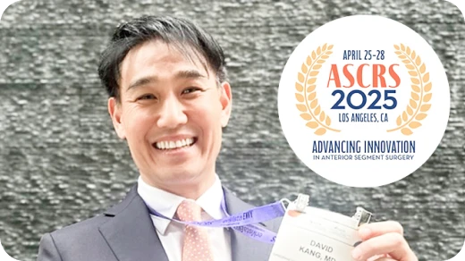
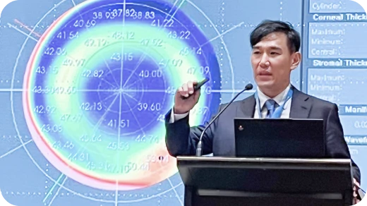
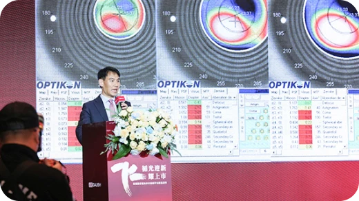
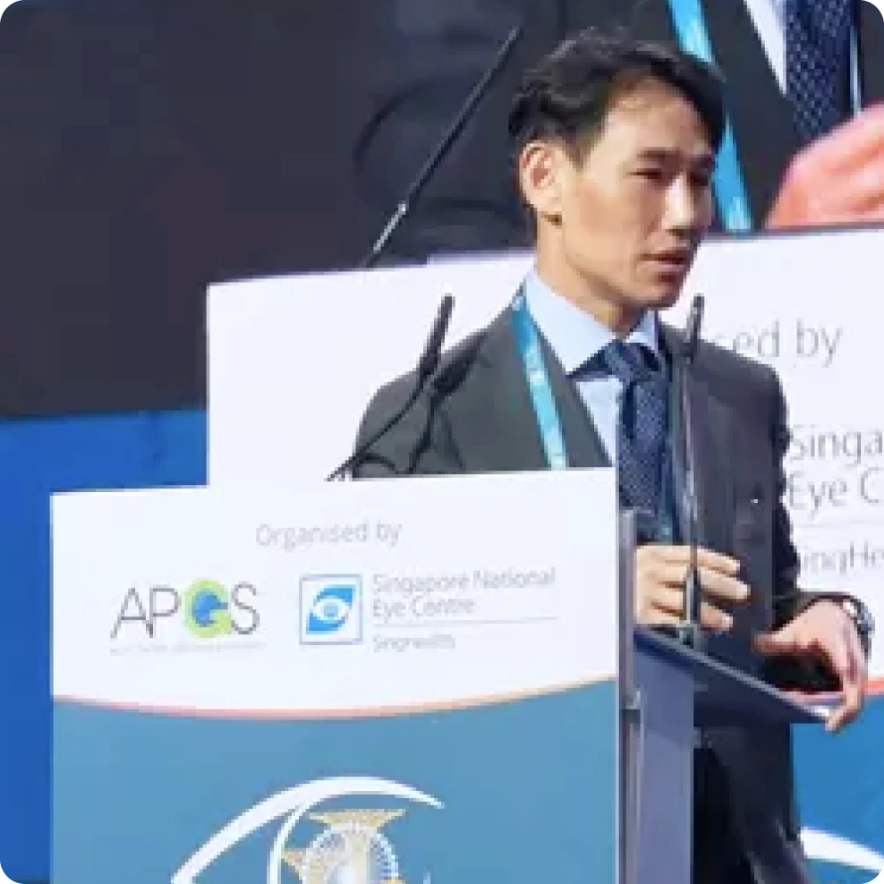
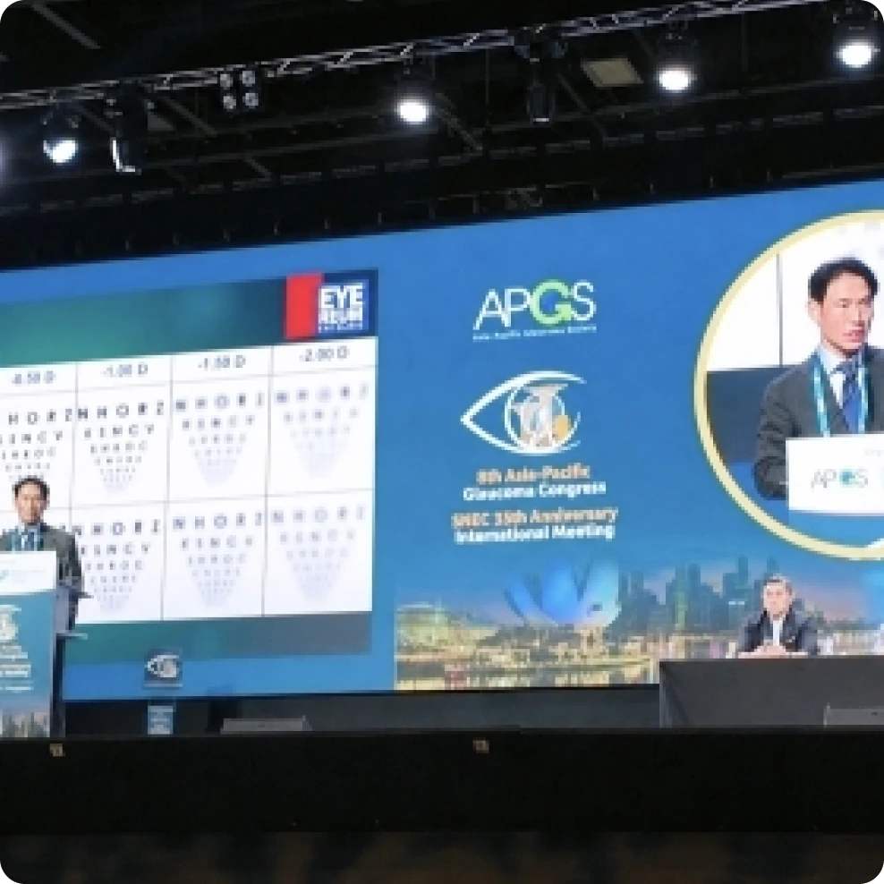
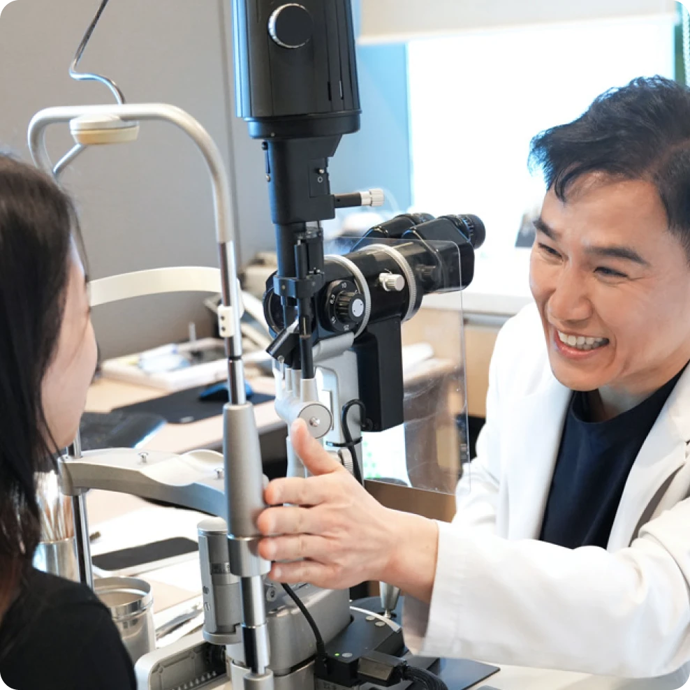

- 학력 및 경력
- 대표 논문
- 학회·강연
- 관련 뉴스
학력 및 경력
Academic & Professional Background
- 1
스마일, 라섹, 노안백내장분야 SCI 논문 60편 이상 (2026년 기준)
- 2
American-European Congress of Ophthalmic Surgery 아시아 의사 최초 공식 연자로 강연 (2025년 6월)
- 3
ISRS(International Society of Refractive Surgery) International Council Member (2020 - 현재)
- 아이리움안과 대표원장
- 연세대학교 의과대학 졸업
- 연세대학교 대학원 졸업
- 연세대학교 세브란스병원 안과 전문의
- 연세대학교 세브란스병원 안과 임상 강사
- 연세대학교 세브란스병원 임상시험센터 연구위원
- 서울아산병원 안과 임상자문의 및 울산대학교 의과대학 안과학교실 외래교수
- 연세대학교 의과대학 안과학교실 외래부교수
- ISRS International Council Member (2020 - 2023)
- World College of Refractive Surgery & Visual Sciences Fellow
- The Ophthalmologist ‘2017 The Power List 50’
- 세계 3대 인명사전 Marquis Who's who ‘Lifetime Achievement Award’ in 2019
- 안내렌즈삽입술·스마일·라섹·백내장 수술 관련 기술 (도구) 특허 보유
- 대한안과학회 정회원
- 한국녹내장연구회 정회원
- ESCRS(유럽백내장굴절수술학회) 정회원
- ASCRS(미국백내장굴절수술학회) 정회원
- KSCRS(한국백내장굴절수술연구회) 정회원
- KCLS(한국콘택트렌즈연구회) 정회원
- AOGS(Asia-Oceania Glaucoma Interest Group) 정회원
- SEAGIG(South East Asia Glaucoma Interest Group) 정회원
- WGC(World Glaucoma Congress) 정회원
- ARVO(Association for Research in Vision Science and Ophthalmology) 정회원
- AAO(미국안과학회) 정회원
- Amaris SmartPulse Technology(SPT) Principal Investigator in South-East Asia
- Zeiss SMILE Ambassador, International Speaker
- The Surgeon's Guide to SMILE Chapter 4, 7 공동집필
- 대한안과학회 제 117회 학술대회 학술상 (‘로우에너지 스마일 수술의 임상적, 전자현미경 및 원자력 현미경학적 고찰’ 비디오논문)
- 2019 KSCRS(한국백내장굴절수술학회) 논문부문 학술상 (‘스마일 수술의 트리플마킹 센트레이션’)
- ASCRS(미국백내장굴절수술학회) SMILE 세션 ‘BEST PAPER’, 2018, 2024
- 2024 ESCRS(유럽백내장굴절수술학회) 산하 CSCRS 유럽학회 ‘스마일’ 공로상 수상 (아시아 유일)
-
비대칭 레이저 배열. Reducing higher-order aberrations after keratorefractive lenticule extraction using asymmetric spacing spot/track distances with low-energy levels.J Cataract Refract Surg. 2025 Oct 1;51(10):895-902. doi: 10.1097/j.jcrs.0000000000001713. Oct 2025. 강성용.
-
플라즈마 스마일. Optimizing Plasma Formation and Minimizing Microcavitation to Enhance Clinical Outcomes in Keratorefractive Lenticule Extraction.Journal of Refractive Surgery. Volume 41, Number 7 Pages e635 - e644, doi :10.3928/1081597X-20250509-05. Jul 2025. 강성용, 정병훈.
-
V4c 콜라머(ICL) 렌즈삽입술의 10년 임상 결과: 시력, 내피세포 밀도, 볼트 분석. 10-Year Clinical Outcomes of V4c Implantable Collamer Lens Implantation: Longitudinal Analysis of Visual Acuity, Endothelial Cell Density, and Vault Dynamics. 2024 Aug 12. AJO. doi: 10.1016/j.ajo.2024.08.007. 10-Year Clinical Outcomes of V4c Implantable Collamer Lens Implantation: Longitudinal Analysis of Visual Acuity, Endothelial Cell Density, and Vault Dynamics.2024 Aug 12. AJO. doi: 10.1016/j.ajo.2024.08.007.
-
샤임플러그 기반 각막 단층촬영 및 생체역학 데이터를 이용한 원추각막 진단 향상 목적의 최적화 인공지능. Optimized artificial intelligence for enhanced ectasia detection using Scheimpflug-based corneal tomography and biomechanical data.Am J Ophthalmol. 2023 Jul;251:126-142. doi: 10.1016/j.ajo.2022.12.016.
-
근시안에서 PresbyMAX 단안 양비구면 절삭 프로파일을 이용한 노안교정. Presbyopia Correction Using the PresbyMAX Monocular Bi-aspheric Ablation Profile in Myopic Eyes.Journal of Refractive Surgery. 2023 Jan 1;49(1):69-75. doi: 10.1097/j.jcrs.0000000000001042.
-
레이저 굴절교정술 후 근시 퇴행 재교정을 위한 ICL 안내렌즈삽입술 3개월 후 수술 결과. 3-month surgical outcomes of Implantable Collamer Lens implantation for myopic regression after laser vision correction surgeries: a retrospective case series.BMC Ophthalmol. 2021 Nov 16;21(1):397. doi: 10.1186/s12886-021-02163-3.
-
로우에너지 스마일 패러다임 완성, Plasma SMILE, 각막 고위수차 획기적 감소
- 2025 ASCRS - 스마일 2년 연속 최우수연구(BEST PAPAER)
- 2025 AECOS - 아시아 유일, '플라즈마 스마일' 강연
- 2024 미국유럽안과수술학회 '스마일 세션' 초청 강연, 공로상 수상
- 'The Surgeon’s Guide to SMILE' 로우에너지 스마일 공동집필

-

-
라식 1세대의 노안∙백내장 수술 초청 강연
- 중국 '시력교정술 국제학회' 한국 의사 유일 초청 강연
- 해외 의학 팟캐스트 'CataractCoach'서 최신 백내장수술 결과 소개
- 2025 ASCRS - 라식 1세대의 불규칙 각막 교정을 위한 '커스텀아이즈(CustomEyes)' 후 백내장수술 결과 강연

-

[강성용원장 학회발표] 아이리움안과 강성용 원장, SNEC 국제학회서 40·50대 노안교정술 임상 결과 발표2026.08.05 -

[강성용원장 학회발표] 강성용 원장, 싱가포르 SNEC에서 40·50대 노안교정술 임상 결과 강연2026.08.05 -

[강성용원장 의학칼럼] 노안 교정, 시력 교정과 어떻게 다를까?2026.06.15 -
[강성용원장 헬스조선 칼럼] “아직 돋보기는 이르다”… 40·50대 노안교정, 무엇이 달라졌나2026.05.18
강성용 대표원장 주요 성과
-
아이리움안과 강성용 원장 인터뷰 - 월간인물 2월호 '첨단 기술과 의료서비스의 융합'
-
로우에너지스마일라식 패러다임 완성, 플라즈마스마일 (강성용원장, KSCRS(한국백내장굴절수술학회), 2024)
-
식라섹 후 백내장수술 - 유명 안과 팟캐스트 CataractCoach 강성용 대표원장 편
-
해외 명의가 극찬한 한국 안과의사ㅣ강성용 대표원장 편